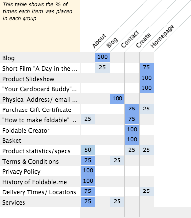

This tree graph showing how they should be grouped into five different categories (the number of categories I provided)
And this chart that showed the frequency of each content snippet's matching with each of the five website categories I had provided

I had set up the study with 15 different content snippets, and five main categories, based on the general organization of the content that I saw fit. I gave the link to the organizer to three friends, and I told them about the website and what they should do. There was some scattering in the data, as there were a few minor disagreements as to the placement of certain content snippets, but for the most part the content usually found its way into similar categories for each participant.
Based on these findings I would set up the website into basically what I found in the tree graph with the five categories. The only major change in the location of the content that I would put into place would be to move the "Your Cardboard Buddy" video from the "About" section of the website to the homepage. One of the participants had basically the same categorization as me, and the other two participants seemed to prefer other locations for content such as the Product Statistics, but nothing too huge. There was a general agreement on pretty much everything, as all content snippets were put into a category with 75% or more reliability with the exception of the "Product Statistics/specs" card.